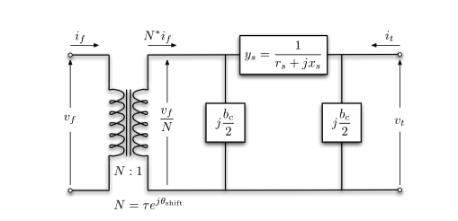

Power System Operation: AC and DC Power Flow Model
Introduction
In this post, we will introduce the basic modelling method of power system operations. It can be a reference to the open-source package power system operation I am developing (GridForge).
I mainly follow the modelling method from MATPOWER. A reference can be found by the MATPOWER Manual.
Matrix form of the power flow model will be followed.
Notation
The following notation is used throughout this post:
- \(i,j\in\mathcal{B}\) index buses, \(\ell\in\mathcal{L}\) indexes branches, and \(k\in\mathcal{G}\) indexes generators;
- italic lower-case symbols denote scalars, bold lower-case symbols denote vectors, and bold upper-case symbols denote matrices;
- descriptive labels such as \(\mathrm{bus}\), \(\mathrm{br}\), \(\mathrm{sh}\), \(\mathrm{shift}\), and \(\mathrm{red}\) are typeset upright;
- \(\mathrm{j}=\sqrt{-1}\) denotes the imaginary unit, \((\cdot)^\top\) denotes transpose, and \((\cdot)^\ast\) denotes element-wise complex conjugation.
Subscripts identify a component, location, or element index. Upright superscripts identify the source of a term, such as \(\boldsymbol{p}_{\mathrm{f}}^{\mathrm{shift}}\), rather than an exponent.
AC Model
Branch Model
The branch model is shown in the following figure.

- \(z_\ell=r_\ell+\mathrm{j}x_\ell\): series impedance of branch \(\ell\), with series admittance \(y_\ell=1/z_\ell\);
- \(\tau_\ell\) and \(\phi_\ell\): transformer tap-ratio magnitude and phase-shift angle in radians. The transformer is located at the from end of the branch. If there is no transformer, \(\tau_\ell=1\) and \(\phi_\ell=0\);
- \(b_{\mathrm{c},\ell}\): total branch-charging susceptance.
For a single branch,
\[ \begin{bmatrix} i_{\mathrm{f},\ell} \\ i_{\mathrm{t},\ell} \end{bmatrix} = \mathbf{Y}_{\mathrm{br},\ell} \begin{bmatrix} v_{\mathrm{f},\ell} \\ v_{\mathrm{t},\ell} \end{bmatrix} \]
where the branch admittance matrix \(\mathbf{Y}_{\mathrm{br},\ell}\) follows from KCL:
\[ \mathbf{Y}_{\mathrm{br},\ell} = \begin{bmatrix} \left(y_\ell + \mathrm{j}\dfrac{b_{\mathrm{c},\ell}}{2}\right) \dfrac{1}{\tau_\ell^2} & -y_\ell \dfrac{1}{\tau_\ell e^{-\mathrm{j}\phi_\ell}} \\ -y_\ell \dfrac{1}{\tau_\ell e^{\mathrm{j}\phi_\ell}} & y_\ell + \mathrm{j}\dfrac{b_{\mathrm{c},\ell}}{2} \end{bmatrix} \tag{1} \]
Note that \(\mathbf{Y}_{\mathrm{br},\ell}\) is generally not symmetric unless \(\phi_\ell=0\).
Denote the four elements of the admittance matrix of branch \(\ell\) as
\[ \mathbf{Y}_{\mathrm{br},\ell} = \begin{bmatrix} y_{\mathrm{ff},\ell} & y_{\mathrm{ft},\ell} \\ y_{\mathrm{tf},\ell} & y_{\mathrm{tt},\ell} \end{bmatrix} \]
Collecting each element over all branches gives the vectors \(\boldsymbol{y}_{\mathrm{ff}}\), \(\boldsymbol{y}_{\mathrm{ft}}\), \(\boldsymbol{y}_{\mathrm{tf}}\), and \(\boldsymbol{y}_{\mathrm{tt}}\).
The from-side and to-side connection matrices \(\mathbf{C}_{\mathrm{f}}\) and \(\mathbf{C}_{\mathrm{t}}\) are defined such that \((\mathbf{C}_{\mathrm{f}})_{\ell i}=1\) when bus \(i\) is the from bus of branch \(\ell\), and \((\mathbf{C}_{\mathrm{t}})_{\ell j}=1\) when bus \(j\) is its to bus. All other entries are zero. The oriented branch-to-bus incidence matrix is
\[ \mathbf{A}=\mathbf{C}_{\mathrm{f}}-\mathbf{C}_{\mathrm{t}}. \]
Generator Model
The generator complex power injection can be written as
\[ \boldsymbol{s}_{\mathrm{g}} = \boldsymbol{p}_{\mathrm{g}}+\mathrm{j}\boldsymbol{q}_{\mathrm{g}}. \]
The generator connection matrix \(\mathbf{C}_{\mathrm{g}}\) is defined such that \((\mathbf{C}_{\mathrm{g}})_{ik}=1\) if generator \(k\) is connected to bus \(i\), and zero otherwise. Its contribution to bus complex-power injection is
\[ \boldsymbol{s}_{\mathrm{bus}}^{\mathrm{g}} = \mathbf{C}_{\mathrm{g}}\boldsymbol{s}_{\mathrm{g}}. \]
Other type of generators, such as solar or wind renewables can be defined in the same way. The constant renewable power injection can also be viewed as negative load.
Load Model
A constant power load is modeled as active and reactive power consumption at each bus. The load complex power injection can be written as
\[ \boldsymbol{s}_{\mathrm{d}} = \boldsymbol{p}_{\mathrm{d}}+\mathrm{j}\boldsymbol{q}_{\mathrm{d}}. \]
Shunt Elements
A shunt-connected element, such as a capacitor or an inductor, is modeled as a fixed impedance to ground at a bus, whose admittance is
\[ y_{\mathrm{sh},i} = g_{\mathrm{sh},i}+\mathrm{j}b_{\mathrm{sh},i}. \]
Collecting these quantities for all buses gives the vectors \(\boldsymbol{y}_{\mathrm{sh}}\), \(\boldsymbol{g}_{\mathrm{sh}}\), and \(\boldsymbol{b}_{\mathrm{sh}}\).
Network Equations
Let \(\boldsymbol{v}\) be the bus-voltage vector and \(\boldsymbol{i}_{\mathrm{bus}}\) be the bus-current-injection vector.
\[ \begin{aligned} \boldsymbol{i}_{\mathrm{bus}} &= \mathbf{Y}_{\mathrm{bus}}\boldsymbol{v}, \\ \boldsymbol{i}_{\mathrm{f}} &= \mathbf{Y}_{\mathrm{f}}\boldsymbol{v}, \\ \boldsymbol{i}_{\mathrm{t}} &= \mathbf{Y}_{\mathrm{t}}\boldsymbol{v}. \end{aligned} \]
with the system admittance matrices defined as
\[ \begin{aligned} \mathbf{Y}_{\mathrm{f}} &= \operatorname{diag}(\boldsymbol{y}_{\mathrm{ff}})\mathbf{C}_{\mathrm{f}} + \operatorname{diag}(\boldsymbol{y}_{\mathrm{ft}})\mathbf{C}_{\mathrm{t}}, \\ \mathbf{Y}_{\mathrm{t}} &= \operatorname{diag}(\boldsymbol{y}_{\mathrm{tf}})\mathbf{C}_{\mathrm{f}} + \operatorname{diag}(\boldsymbol{y}_{\mathrm{tt}})\mathbf{C}_{\mathrm{t}}, \\ \mathbf{Y}_{\mathrm{bus}} &= \mathbf{C}_{\mathrm{f}}^{\top}\mathbf{Y}_{\mathrm{f}} + \mathbf{C}_{\mathrm{t}}^{\top}\mathbf{Y}_{\mathrm{t}} + \operatorname{diag}(\boldsymbol{y}_{\mathrm{sh}}). \end{aligned} \]
In detail, we have the bus current injection as
\[ \boldsymbol{i}_{\mathrm{bus}} = \mathbf{C}_{\mathrm{f}}^{\top} \operatorname{diag}(\boldsymbol{y}_{\mathrm{ff}}) \mathbf{C}_{\mathrm{f}}\boldsymbol{v} + \mathbf{C}_{\mathrm{f}}^{\top} \operatorname{diag}(\boldsymbol{y}_{\mathrm{ft}}) \mathbf{C}_{\mathrm{t}}\boldsymbol{v} + \mathbf{C}_{\mathrm{t}}^{\top} \operatorname{diag}(\boldsymbol{y}_{\mathrm{tf}}) \mathbf{C}_{\mathrm{f}}\boldsymbol{v} + \mathbf{C}_{\mathrm{t}}^{\top} \operatorname{diag}(\boldsymbol{y}_{\mathrm{tt}}) \mathbf{C}_{\mathrm{t}}\boldsymbol{v} + \operatorname{diag}(\boldsymbol{y}_{\mathrm{sh}})\boldsymbol{v}. \]
For example, \(\mathbf{C}_{\mathrm{f}}\boldsymbol{v}\) selects the from-bus voltage of each branch, \(\operatorname{diag}(\boldsymbol{y}_{\mathrm{ff}}) \mathbf{C}_{\mathrm{f}}\boldsymbol{v}\) gives the corresponding contribution to from-end branch current, and \(\mathbf{C}_{\mathrm{f}}^\top\) aggregates those branch currents at buses.
Then the complex power injection and flows can be written as (the power flow equation)
\[ \begin{aligned} \boldsymbol{s}_{\mathrm{bus}}(\boldsymbol{v}) &= \operatorname{diag}(\boldsymbol{v}) \boldsymbol{i}_{\mathrm{bus}}^\ast = \operatorname{diag}(\boldsymbol{v}) \mathbf{Y}_{\mathrm{bus}}^\ast\boldsymbol{v}^\ast, \\ \boldsymbol{s}_{\mathrm{f}}(\boldsymbol{v}) &= \operatorname{diag}(\mathbf{C}_{\mathrm{f}}\boldsymbol{v}) \boldsymbol{i}_{\mathrm{f}}^\ast = \operatorname{diag}(\mathbf{C}_{\mathrm{f}}\boldsymbol{v}) \mathbf{Y}_{\mathrm{f}}^\ast\boldsymbol{v}^\ast, \\ \boldsymbol{s}_{\mathrm{t}}(\boldsymbol{v}) &= \operatorname{diag}(\mathbf{C}_{\mathrm{t}}\boldsymbol{v}) \boldsymbol{i}_{\mathrm{t}}^\ast = \operatorname{diag}(\mathbf{C}_{\mathrm{t}}\boldsymbol{v}) \mathbf{Y}_{\mathrm{t}}^\ast\boldsymbol{v}^\ast. \end{aligned} \]
Here, complex conjugation is applied element-wise, so \((\mathbf{A}\boldsymbol{x})^\ast =\mathbf{A}^\ast\boldsymbol{x}^\ast\).
The bus injection can be written as (power injection balance)
\[ \boldsymbol{g}_{\mathrm{AC}}(\boldsymbol{v},\boldsymbol{s}_{\mathrm{g}}) = \boldsymbol{s}_{\mathrm{bus}}(\boldsymbol{v}) + \boldsymbol{s}_{\mathrm{d}} - \mathbf{C}_{\mathrm{g}}\boldsymbol{s}_{\mathrm{g}} = \boldsymbol{0}. \]
DC Model
The DC model makes three assumptions about the AC model:
- Each voltage magnitude is fixed at 1 p.u., so \(v_i=e^{\mathrm{j}\theta_i}\).
- Each branch is lossless, so \(r_\ell=0\), and branch charging is ignored, so \(b_{\mathrm{c},\ell}=0\). The series admittance is therefore \(y_\ell=1/(\mathrm{j}x_\ell)\).
- The angle difference across each branch is small, so \(\sin(\theta_{\mathrm{f},\ell}-\theta_{\mathrm{t},\ell}-\phi_\ell) \approx \theta_{\mathrm{f},\ell}-\theta_{\mathrm{t},\ell}-\phi_\ell\).
Under the lossless and zero-charging assumptions, the branch admittance matrix in Equation 1 becomes
\[ \mathbf{Y}_{\mathrm{br},\ell} \approx \frac{1}{\mathrm{j}x_\ell} \begin{bmatrix} \dfrac{1}{\tau_\ell^2} & -\dfrac{1}{\tau_\ell e^{-\mathrm{j}\phi_\ell}} \\ -\dfrac{1}{\tau_\ell e^{\mathrm{j}\phi_\ell}} & 1 \end{bmatrix} \]
Define the DC branch coefficient
\[ \beta_\ell=\frac{1}{x_\ell\tau_\ell}, \]
and collect these coefficients into \(\boldsymbol{\beta}=[\beta_\ell]_{\ell\in\mathcal{L}}\) and \(\mathbf{D}_{\beta}=\operatorname{diag}(\boldsymbol{\beta})\). The direct phase-shift injection at the from end of branch \(\ell\) is
\[ p_{\mathrm{f},\ell}^{\mathrm{shift}} = -\beta_\ell\phi_\ell. \]
Collecting these branch terms gives \(\boldsymbol{p}_{\mathrm{f}}^{\mathrm{shift}}\). The corresponding bus injections are
\[ \boldsymbol{p}_{\mathrm{bus}}^{\mathrm{shift}} = \mathbf{A}^{\top}\boldsymbol{p}_{\mathrm{f}}^{\mathrm{shift}}. \]
The bus active-power injection equation is
\[ \boldsymbol{p}_{\mathrm{bus}} = \mathbf{B}_{\mathrm{bus}}\boldsymbol{\theta} + \boldsymbol{p}_{\mathrm{bus}}^{\mathrm{shift}}. \]
The branch active-power-flow equation is
\[ \boldsymbol{p}_{\mathrm{f}} = \mathbf{B}_{\mathrm{f}}\boldsymbol{\theta} + \boldsymbol{p}_{\mathrm{f}}^{\mathrm{shift}} = -\boldsymbol{p}_{\mathrm{t}}. \]
The DC-model system matrices can be written as
\[ \begin{aligned} \mathbf{B}_{\mathrm{f}} &= \mathbf{D}_{\beta}\mathbf{A}, \\ \mathbf{B}_{\mathrm{bus}} &= \mathbf{A}^{\top}\mathbf{B}_{\mathrm{f}} = \mathbf{A}^{\top}\mathbf{D}_{\beta}\mathbf{A}. \end{aligned} \]
At unit voltage magnitude, define the active-power consumption of bus shunts as \(\boldsymbol{p}_{\mathrm{sh}}=\boldsymbol{g}_{\mathrm{sh}}\) in per unit. The bus active-power balance is
\[ \boldsymbol{g}_{\mathrm{DC}} (\boldsymbol{\theta},\boldsymbol{p}_{\mathrm{g}}) = \mathbf{B}_{\mathrm{bus}}\boldsymbol{\theta} + \boldsymbol{p}_{\mathrm{bus}}^{\mathrm{shift}} + \boldsymbol{p}_{\mathrm{d}} + \boldsymbol{p}_{\mathrm{sh}} - \mathbf{C}_{\mathrm{g}}\boldsymbol{p}_{\mathrm{g}} = \boldsymbol{0}. \]
PTDF Matrix
The power transfer distribution factor (PTDF) matrix is the linear mapping from balanced bus active-power injections to branch active-power flows under the DC model. Let
\[ \mathbf{H} \in \mathbb{R}^{n_{\mathrm{br}}\times n_{\mathrm{bus}}} \]
denote the PTDF matrix, where \(n_{\mathrm{br}}\) and \(n_{\mathrm{bus}}\) are the numbers of branches and buses, respectively. Ignoring phase-shift terms temporarily, the mapping is
\[ \Delta\boldsymbol{p}_{\mathrm{f}} = \mathbf{H}\Delta\boldsymbol{p}_{\mathrm{bus}}. \]
Derivation
The DC network equations are
\[ \begin{aligned} \boldsymbol{p}_{\mathrm{bus}} &= \mathbf{B}_{\mathrm{bus}}\boldsymbol{\theta} + \boldsymbol{p}_{\mathrm{bus}}^{\mathrm{shift}}, \\ \boldsymbol{p}_{\mathrm{f}} &= \mathbf{B}_{\mathrm{f}}\boldsymbol{\theta} + \boldsymbol{p}_{\mathrm{f}}^{\mathrm{shift}}. \end{aligned} \]
The matrix \(\mathbf{B}_{\mathrm{bus}}\) is singular because adding the same constant to every bus angle does not change any branch angle difference. Select one bus \(s\) as the angle reference and set
\[ \theta_s = 0. \]
Let \(\mathcal{N}=\mathcal{B}\setminus\{s\}\) denote the non-reference buses. Define the reduced nodal matrix and the corresponding columns of \(\mathbf{B}_{\mathrm{f}}\) as
\[ \begin{aligned} \mathbf{B}_{\mathrm{red}} &:= (\mathbf{B}_{\mathrm{bus}})_{\mathcal{N},\mathcal{N}}, \\ \mathbf{B}_{\mathrm{f},\mathcal{N}} &:= (\mathbf{B}_{\mathrm{f}})_{:,\mathcal{N}}. \end{aligned} \]
For a connected network, \(\mathbf{B}_{\mathrm{red}}\) is normally nonsingular. Without phase-shift terms,
\[ \boldsymbol{\theta}_{\mathcal{N}} = \mathbf{B}_{\mathrm{red}}^{-1} \boldsymbol{p}_{\mathrm{bus},\mathcal{N}}. \]
Substituting this result into the branch-flow equation gives
\[ \boldsymbol{p}_{\mathrm{f}} = \mathbf{B}_{\mathrm{f},\mathcal{N}} \mathbf{B}_{\mathrm{red}}^{-1} \boldsymbol{p}_{\mathrm{bus},\mathcal{N}}. \]
Let \(\mathbf{H}_{\mathcal{N}}:=(\mathbf{H})_{:,\mathcal{N}}\) denote the non-slack columns of the PTDF matrix. Consequently, the single-slack PTDF matrix is defined by
\[ \begin{aligned} \mathbf{H}_{\mathcal{N}} &= \mathbf{B}_{\mathrm{f},\mathcal{N}} \mathbf{B}_{\mathrm{red}}^{-1}, \\ \boldsymbol{h}_s &= \boldsymbol{0}, \end{aligned} \]
where \(\boldsymbol{h}_s\) is the PTDF column associated with the slack bus.
Direct DC Power-Flow Calculation
PTDF can be used to calculate DC branch flows directly, without first computing bus angles:
\[ \boldsymbol{p}_{\mathrm{f}} = \mathbf{H}\boldsymbol{p}_{\mathrm{bus}}. \]
This is not a different model from DC power flow. It is the same linear system after the bus-angle variables have been eliminated. The input should be a net bus-injection vector satisfying
\[ \mathbf{1}^{\top}\boldsymbol{p}_{\mathrm{bus}}=0, \]
with entries in bus order. The result is in branch order and follows each branch’s defined from-to orientation.
Therefore, the above two equations are usually solved together, such as in DC OPF.
In the standard linear DC model, phase-shift angles also do not change the sensitivity matrix \(\mathbf{H}\); instead, they introduce an affine flow offset.
Phase Shifters and the Flow Offset
When phase-shifting transformers are present, \(\boldsymbol{p}_{\mathrm{f}}^{\mathrm{shift}}\) is the direct phase-shift term in the angle-based branch equation. It is not, by itself, the final branch flow produced by the phase shifter, because bus angles must also adjust to maintain nodal power balance.
Eliminating the angles while retaining the shift terms gives
\[ \boldsymbol{p}_{\mathrm{f}} = \mathbf{H}\boldsymbol{p}_{\mathrm{bus}} + \left( \boldsymbol{p}_{\mathrm{f}}^{\mathrm{shift}} - \mathbf{H}\boldsymbol{p}_{\mathrm{bus}}^{\mathrm{shift}} \right). \]
Therefore, in per-unit quantities,
\[ \boldsymbol{p}_{\mathrm{f}}^{\mathrm{offset}} = \boldsymbol{p}_{\mathrm{f}}^{\mathrm{shift}} - \mathbf{H}\boldsymbol{p}_{\mathrm{bus}}^{\mathrm{shift}}. \]
The second term is the fixed flow offset. GridForge stores it in MW as branch_flow_offset_mw; the two direct shift terms are exposed in p.u. as branch_shift_injection_pu and bus_shift_injection_pu.
The matrix definitions and phase-shift signs above follow MATPOWER’s
makeBdcandmakePTDFconventions.